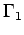

Inhalt Index DeskTop Bronstein

 Geometrie Sphärische Trigonometrie Grundbegriffe der Geometrie auf der Kugel
Geometrie Sphärische Trigonometrie Grundbegriffe der Geometrie auf der Kugel


Durch die Endpunkte A und B eines Kugeldurchmessers sollen zwei Ebenen  und verlaufen, die den Winkel  miteinander einschließen und zwei Großkreishälften und definieren.
miteinander einschließen und zwei Großkreishälften und definieren.
Der von zwei Großkreishälften begrenzte Teil der Kugeloberfläche wird sphärisches Zweieck oder Kugelzweieck genannt. Als Seiten des sphärischen Zweiecks werden die sphärischen Abstände zwischen den Punkten A und B auf den Großkreisen definiert. Jede Seite beträgt daher
Als Winkel des sphärischen Zweiecks werden die Winkel zwischen den Tangenten an die Großkreise g1 und g2 in den Punkten A und B definiert. Sie sind gleich und stimmen mit dem sogenannten Keilwinkel  zwischen den Ebenen und überein. Sind C und D die Halbierungspunkte der beiden Großkreisbogen durch A und B, dann kann der Winkel
zwischen den Ebenen und überein. Sind C und D die Halbierungspunkte der beiden Großkreisbogen durch A und B, dann kann der Winkel  auch als sphärischer Abstand der Punkte C und D aufgefaßt werden. Die Fläche Az des Kugelzweiecks verhält sich zur Kugelfläche wie der Winkel
auch als sphärischer Abstand der Punkte C und D aufgefaßt werden. Die Fläche Az des Kugelzweiecks verhält sich zur Kugelfläche wie der Winkel  zu Daraus folgt
zu Daraus folgt
| (3.182) |
mit dem Umrechnungsfaktor  gemäß (3.179c).
gemäß (3.179c).